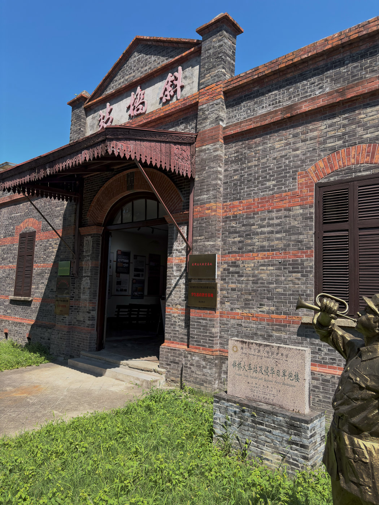
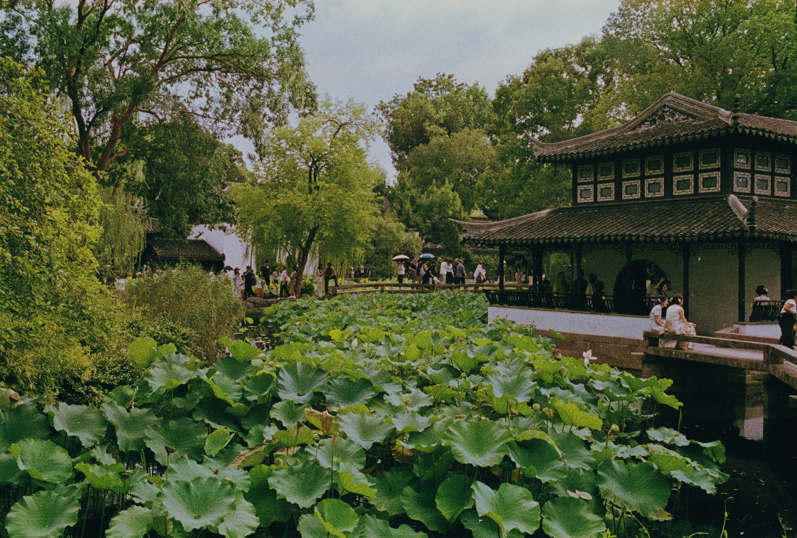
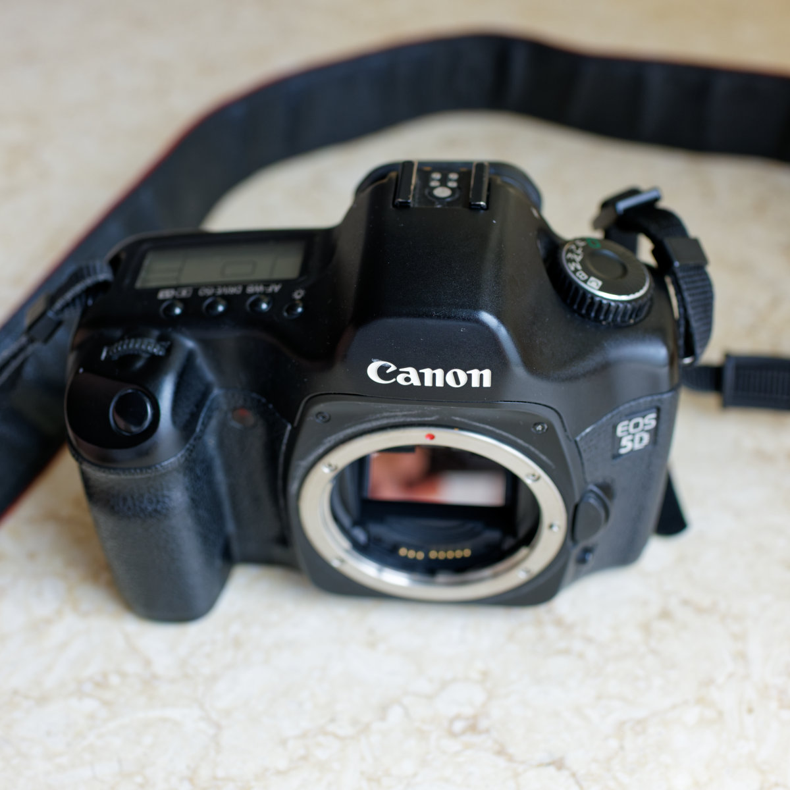

外拍活动NO.010 | 斜桥火车站旧址手机快拍
在斜桥火车站旧址的炮楼里，用 iPhone Air 快速记录昏暗空间、铁轨、货运车厢与窗外经过的列车。
Personal Archive
这里保存一些照片、文字、器材折腾，以及我对日常生活的观察。摄影是入口，文字是线索，最后留下来的大概是一个人的观看方式。


在斜桥火车站旧址的炮楼里，用 iPhone Air 快速记录昏暗空间、铁轨、货运车厢与窗外经过的列车。

带着二十年前的 EOS 50 和一卷乐凯 C200，在夏日傍晚的苏州博物馆，记录建筑、游人与雨后的光线。

一次等待苏博夜场前的临时入园，也成了 Canon EOS 50、EF 40mm 饼干镜头与乐凯 C-200 的试拍。面对店扫与自扫的色彩差异，我最终决定先保留这卷胶片不太确定的颜色。

Canon EOS 5D 是佳能第一代面向更广泛摄影者的全画幅数码单反。二十年后重新使用它，我更在意的已经不是参数，而是它简单、直接而耐看的成像。

一支真正改变相机携带感受的 EF 饼干镜头，小到几乎可以忘记它的存在。


A personal archive of photographs, notes and curiosities.